2026년 8월호Cover Stories
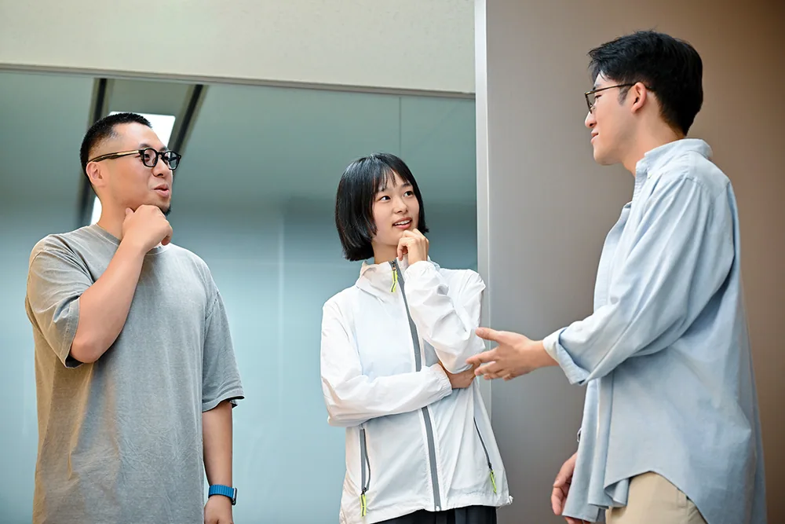
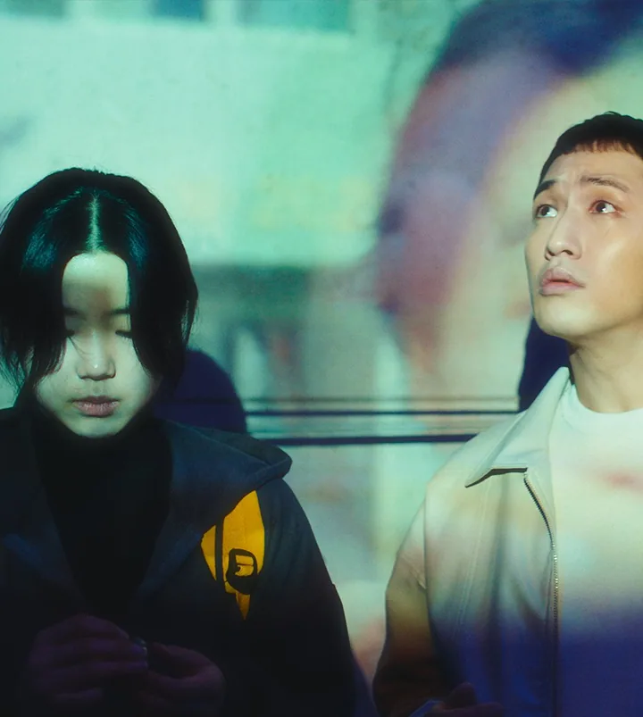
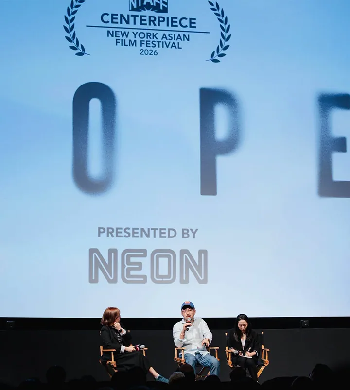
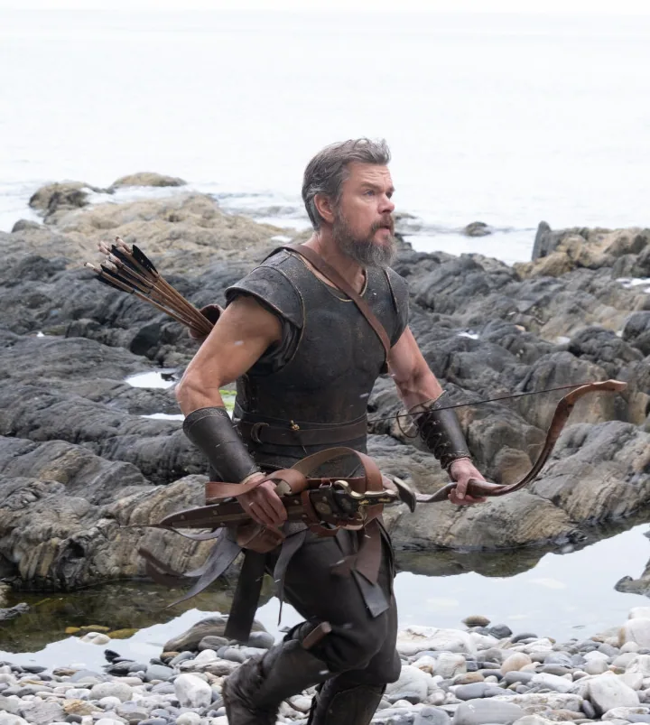
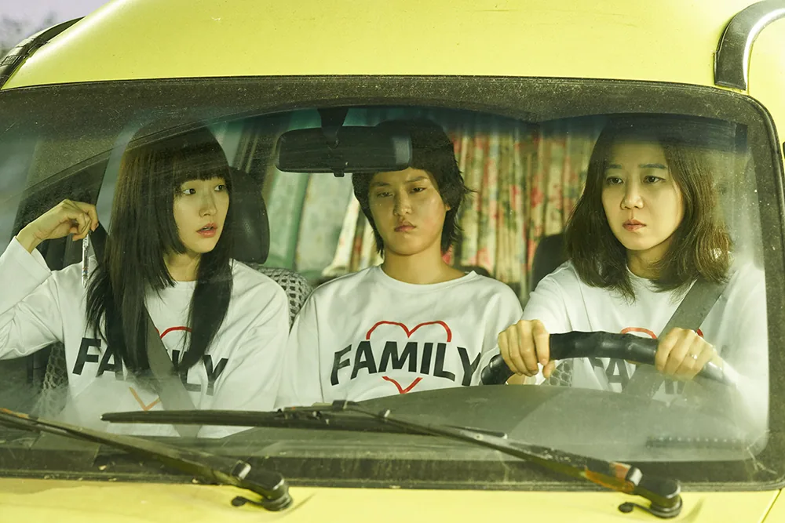
〈경주기행〉 · 감독 김미조결국 〈경주기행〉은 YES인가 NO인가?
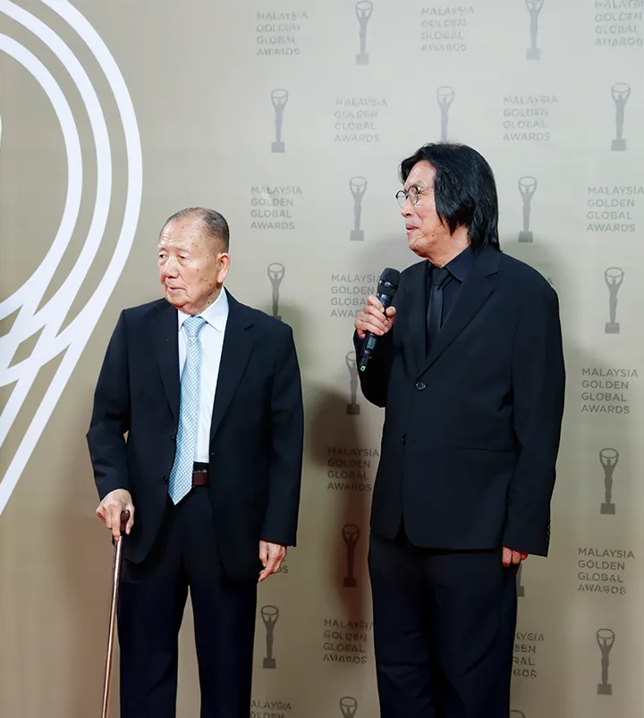
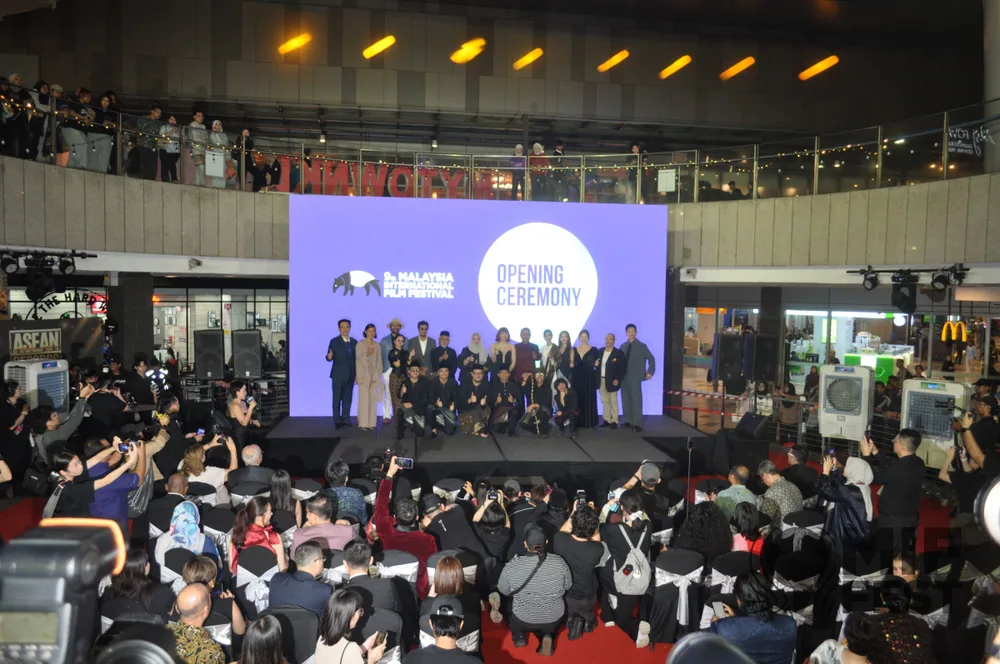
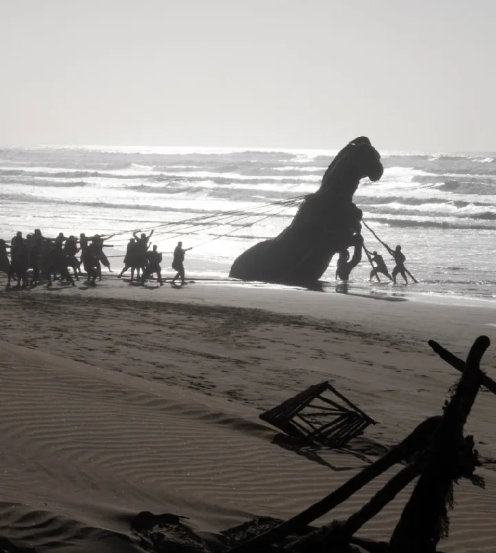
〈오디세이〉 3주 연속 1위
〈경주기행〉 등 가족 신작이 차트에 진입한 8월 4주차 극장가
지난 주차 리포트 8월 3주차 2주차 1주차 7월 5주차
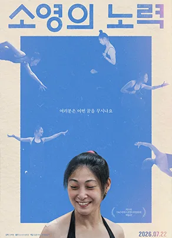
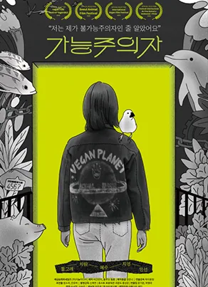
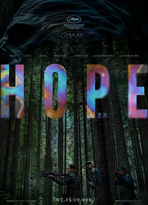
2026년 7월 한국영화 제작상황판 · 7월 개봉작 살펴보기
웹진 한국영화 뉴스레터